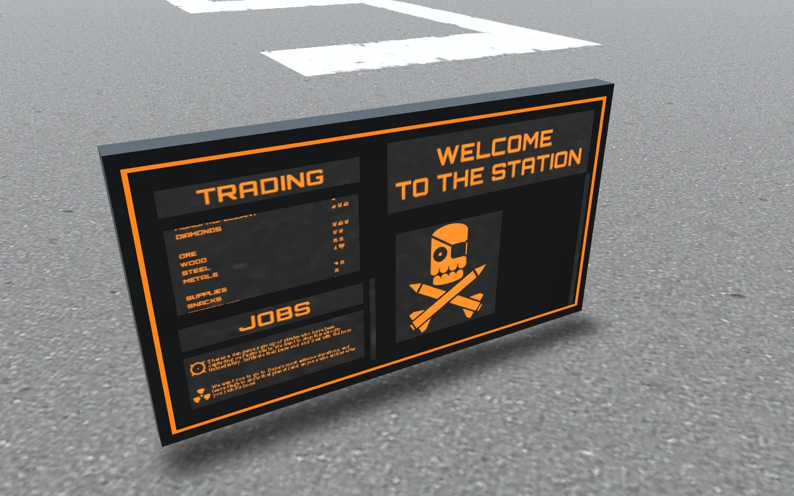
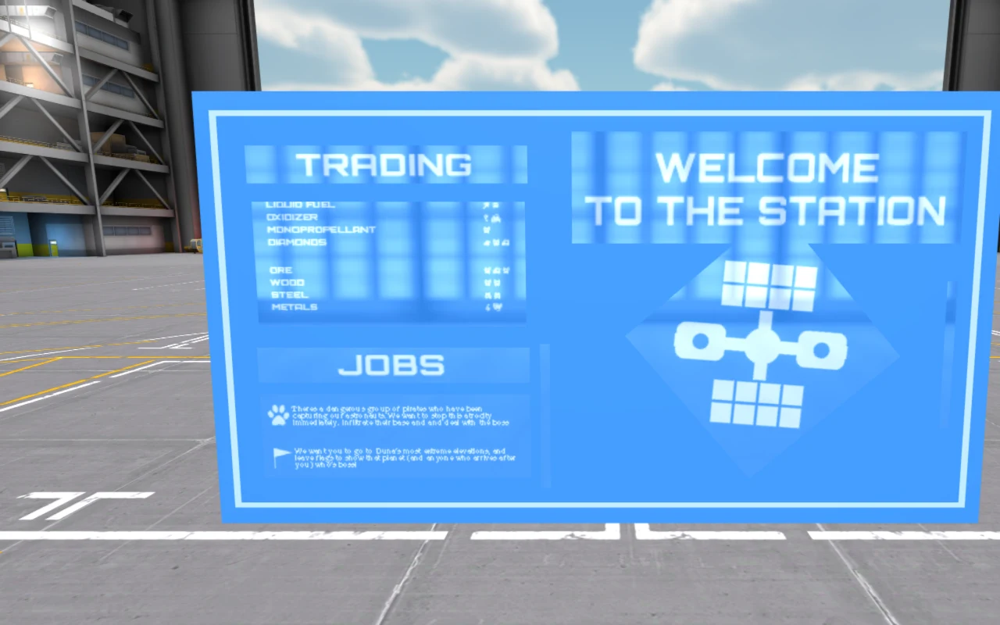
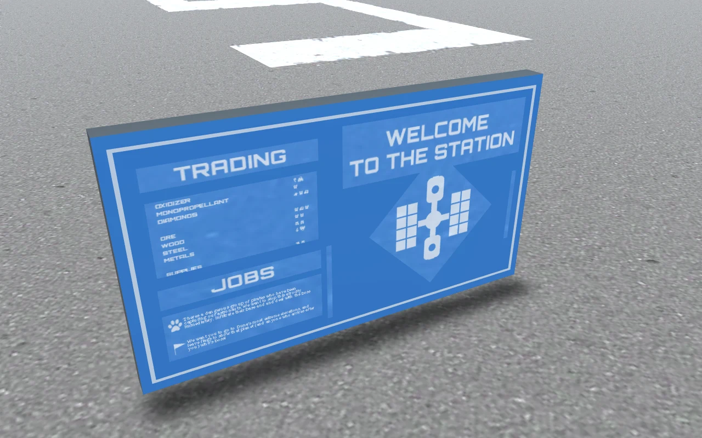

ShineFix home
← Back to supported mods
Kerbal Hacks: Animated Station Screens
Optics verified
Human tested
Version 1.0
Compatibility evidence
Original screenshot gallery
Parts
Pirate Station Screen

Station Screen

